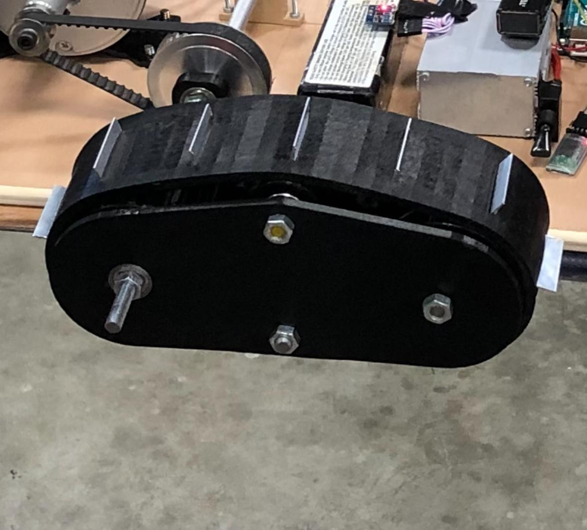

Academical Project
Robot factory development project: starting from a video of a man disassembling an actuator we had to imagine thanks to the Robot DK software, and the robot database linked with, an automated solution in order to respect the technical specifications of the factory.

In this study, I compared various detection devices to provide the best answer to the part position detection at the post arrival. I also coded the process that should be made according to this position information.
Moreover, in order to reduce the time of the process, we manage to reduce the number of openings from the robot hand-like tool thanks to specific 3D printed fix tools in which the part can be pushed to push out the piston. Another 3D printed bracket was designed to locate exactly the part, reducing the problem of combining position error between the two relative position error of our two robots.
This project was nearly only developed on computer, but we still managed to run some tests in real condition to validate the various tool grips and at the same time the major issues unsolvable on Robo DK